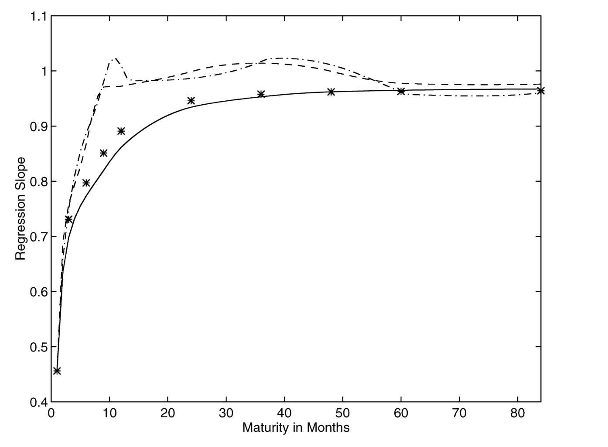
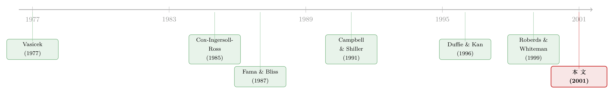

利率曲线的「反常」，其实藏在最短的那两年里
本文读的是 Backus, Foresi, Mozumdar & Wu (2001, JFE)：把利率「可预测性」的证据，从习惯用的「债券收益率」改写成「单期远期利率的变化」之后，预期假说被违背得最厉害的地方，不在长端，而在两年以内的短端；而要让一个无套利模型同时装下这件事和「收益率曲线平均向上倾斜」，秘诀竟是让短端利率负向依赖于平方根因子——他们称之为「负 CIR 模型」。
1 两条平行了二十五年的铁轨
先讲一个让人有点不舒服的事实。
过去二十多年里，研究利率的人其实分成了两拨，而这两拨人几乎不说话。
一拨是做实证的。他们的全部工作几乎都围着一个叫 预期假说 (expectations hypothesis, EH) 的东西转——这个假说说，长端远期利率里的 期限溢价 (term premium) 是个常数，不随时间变。绝大多数实证研究的结论都是：不，它不是常数。这套「拒绝 EH」的文献被反复综述过，最近的几篇是 Bekaert et al. (1997a)、Campbell (1995)。虽然证据都指向「EH 不成立」，但这些研究至少给了我们一份关于利率动态的有用清单：比如，用长短端之间的 利差 (spread) 可以预测未来的利率。
另一拨是做理论的。他们沿着 Vasicek (1977) 和 Cox, Ingersoll & Ross (1985, 下称 CIR) 铺的轨道，发展出一套「无套利」的债券定价理论。这套理论在它最一般的形态下，对期限溢价几乎不加任何约束，更谈不上偏袒预期假说。
问题就在这儿：实证攒了一堆关于利率「怎么动」的事实，理论攒了一套关于利率「怎么定价」的框架，可这两摞东西始终没被摆到同一张桌子上对账。 本文四位作者想做的，恰恰就是把它们焊在一起。
而他们焊接的方式，是从一个看似不起眼的改写开始的。
2 换一把尺子：从收益率到「远期利率的变化」
我们先把记号摆清楚，因为这篇文章的全部巧思，都藏在「用什么量」这个选择里。
记 \(b^n_t\) 为 \(t\) 时刻、\(t+n\) 到期、面值一美元的零息债券价格。连续复利的 \(n\) 期 收益率 (yield) 定义为
$$y^n_t = -n^{-1}\log b^n_t,$$
单期 远期利率 (forward rate) 定义为
$$f^n_t = \log(b^n_t / b^{n+1}_t),$$
于是收益率不过是远期利率的平均：\(y^n_t = n^{-1}\sum_{i=0}^{n-1} f^i_t\)。短端利率就是 \(r_t = y^1_t = f^0_t\)。数据里一期是一个月，利率按年化百分数报（乘了 1200）。
过去的实证文献，习惯拿「收益率」或「收益率的变化」去做预测回归。本文偏偏换了一把尺子——他们直接预测未来的远期利率：
$$f^{n-1}_{t+1} - r_t = \text{const} + c_n\,(f^n_t - r_t) + \text{residual}. \tag{4}$$
作者自己说，据他们所知，这个「远期利率回归」是文献里没出现过的。
为什么是这把尺子？因为它的根，直接扎在预期假说的「鞅 (martingale) 性质」上。EH 最常见的写法是「远期利率等于未来短端利率的预期」：
$$f^n_t = E_t\, r_{t+n}, \tag{5}$$
它直接推出远期利率是一个鞅：
$$f^n_t = E_t\, f^{n-1}_{t+1}. \tag{6}$$
由于 (5) 一眼就被数据否掉（平均远期利率随期限系统性地变化），多数人退一步，允许一个常数期限溢价 \(p^n\)：
$$f^n_t = E_t\, r_{t+n} + p^n, \tag{5'}$$
而真正「一般」的对立假设，是期限溢价随时间变：
$$f^n_t = E_t\, r_{t+n} + p^n_t. \tag{7}$$
关键的一步在于：只要 (6) 或更弱的 (5') 成立，回归式 (4) 的斜率 \(c_n\) 对所有期限 \(n\) 都应该等于 1。换句话说，\(c_n\) 偏离 1，就是期限溢价随时间变动的直接证据。这把尺子的好处是，它和「平稳的债券定价理论」可以直接比对——理论说，在一大类平稳模型里，理论斜率 \(c_n\) 会随 \(n\to\infty\) 趋于 1（这条命题 Backus, Gregory & Zin (1988) 和 Dybvig, Ingersoll & Ross (1996) 在不同设定下都证过）。
接着，一个自然的问题是：数据里的 \(c_n\)，到底长什么样？
3 反常出现在「短端」，而不是长端
作者用四套远期利率数据（smoothed Fama-Bliss、unsmoothed Fama-Bliss、McCulloch 三次样条、扩展 Nelson-Siegel，全部由 Robert Bliss 提供的程序和 CRSP 数据生成，样本 1970 年 1 月至 1995 年 12 月，312 个月）跑了回归 (4)。
结果很干净，也很出人意料。除了「不平滑」的那套 Fama-Bliss 数据是个例外，其余三套的图景高度一致：
- \(n=1\) 个月时，斜率大约只有 0.46~0.52（standard error 在 0.1 上下）；
- 斜率随期限单调上升；
- 到 \(n=24\) 个月以后，斜率已经非常接近 1，长端稳定在 约 0.96（standard error 0.02 甚至更小）。
注意这个 0.96——它接近 1，但不是 1。也就是说，长端远期利率的行为，和平稳理论「近似」吻合，但不是它的精确复刻。
这就是本文第一个、也是最重要的洞见：违背预期假说最厉害的地方，是两年以内的短端，而不是长端。 短端的远期利率变化里，既有可预测的短端利率变化，也有可预测的期限溢价变化；而长端，则大体上服从平稳理论。
这一点之所以重要，是因为它和过去那些「用收益率」做的研究给出的印象正好相反——那些研究里，偏离 EH 最大的地方往往出现在长端。同一批数据、同一个市场，换把尺子，「反常」就从长端搬到了短端。这两幅看似矛盾的图景能不能调和，是本文最后要回答的问题。（关于「远期利率到底在预言什么」这个老题目，可参见《利率走过的那道长弧》。）
在下结论之前，作者很负责任地排除了两个「假信号」的可能。
其一，测量误差。 远期利率不是观测到的，是从债券价格估出来的，必然带噪声。误差在短端会把斜率往 1 推，在长端会把斜率往 0 推。作者用 McCulloch & Kwon (1993) 报告的标准误，以及不同估计方法之间的差异，量出测量误差的标准差大约在 9 到 21 个基点之间（unsmoothed Fama-Bliss 在长端是个刺眼的例外，能到几百个基点）。代入修正公式后，误差调整过的斜率是 \(c_1 = 0.462\)、\(c_{120} = 0.968\)——几乎没动。要让 \(c_{120}\) 变成 1，需要 35 个基点的误差，是实测值的两倍多。结论：测量误差不足以改变解读。
其二，小样本偏误。 沿用 Bekaert et al. (1997a) 的推导，若短端利率是 AR(1)，则斜率的小样本偏误近似为
$$E(\hat c_n) - 1 \approx \left(\frac{u^{n-1}}{1-u^n}\right)\left(\frac{1+3u}{T}\right),$$
这是个正的偏误——它把斜率往 1 以上推，方向和我们观察到的「斜率小于 1」恰好相反。所以小样本偏误也不是元凶。
两个嫌疑人都排除了。期限溢价确实在随时间变动，这是真的。
4 一个一因子模型，为什么注定做不到
证据立住了，下一步就是回到理论那一摞，问：什么样的无套利模型能生出这种「短端反常、长端守规矩」的图景？
作者选的工具是 仿射模型 (affine model)——准确说，是 Duffie & Kan (1996) 刻画的那一类的一个子集。选它的理由很实在：仿射模型的线性结构，让人能相对简单地算出它对 (4) 这种线性预测回归的含义。多因子 Vasicek 模型可以当场出局，因为它隐含常数期限溢价，根本生不出「远期利率变化和利差相关」这件事。
4.1 模型设定：一步步搭起来
模型有两块积木。第一块是状态变量 \(z\) 的动态：
$$z_{t+1} - z_t = (I-\Phi)(\theta - z_t) + \Sigma\, V(z_t)^{1/2}\,\varepsilon_{t+1}, \tag{10}$$
这里 \(\varepsilon \sim \text{NID}(0,I)\)，\(\Phi\) 是对角元为正的稳定矩阵，\(\Sigma\) 是对角元为 \(\sigma_i\) 的对角阵，\(V(z_t)\) 是对角阵、其元素 \(v_i(z_t) = z_{it}\)。直觉上，这就是一组带均值回复（拉向长期均值 \(\theta\)）、且条件方差随状态变化的随机过程——方差会动，期限溢价才可能会动。
第二块是 定价核 (pricing kernel) \(m_{t+1}\)，它决定了所有资产怎么被贴现：
最常见的特例就是 CIR 模型：\(\delta = 0\)，\(\Phi\) 对角，\(\gamma_i = 1 + \lambda_i^2/2\)。这个 \(\gamma_i\) 的取法是一个归一化，使得短端利率正好是 \(r_t = \sum_i z_{it}\)。
有了这两块，债券价格是状态变量的对数线性函数：
$$-\log b^n_t = A_n + B_n^\top z_t, \tag{12}$$
系数 \(\{A_n, B_n\}\) 由定价关系 \(b^{n+1}_t = E_t(m_{t+1} b^n_{t+1})\)（起点 \(b^0_t = 1\)，今天一美元就值一美元）递推出来：
$$A_{n+1} = A_n + \delta + B_n^\top (I-\Phi)\theta,\qquad B_{i,n+1} = \gamma_i + \sum_j B_{jn} u_{ji} - (\lambda_i + B_{in}\sigma_i)^2/2,$$
从 \(A_0 = 0\)、\(B_0 = 0\) 起步。再加一个温和的条件：\(B_n\) 收敛到某个常数向量 \(B\)（这在 CIR 及后文所有估计的例子里都成立）。
于是，远期利率回归 (4) 的总体斜率，可以写成一个关于 \(\{B_1, B_n, B_{n+1}, C_0\}\) 的显式表达式（论文 Eq. (15)，其中 \(C_0\) 是 \(z\) 的无条件方差），它显然能取到 1 以外的值。但真正漂亮的是它的极限行为：当 \(B_n\) 收敛时，
$$\lim_{n\to\infty} c_n = 1. \tag{16}$$
这正是 CIR 模型一条著名性质的推广——远期利率的方差随期限衰减到零，所以对足够长的期限，我们实际上是在「拿 \(-r\) 对它自己回归」，斜率自然是 1。理论和数据在长端的一致，到这里就解释清楚了。 难的是短端。
4.2 一因子 CIR 的死结
作者用 GMM 估了五个仿射模型（Table 4，11 个矩条件 + 1 个精确施加的均值条件，权重矩阵取自三因子的 Model E）。Model A 是标准的一因子 CIR，它的 J 统计量直接拒绝——这和 Chen & Scott (1993)、Pearson & Sun (1994) 的早期发现一致，不算意外。
但作者没有止步于「它被拒了」，而是把为什么被拒讲透了。问题出在一个根本的张力上。在一因子 CIR 里，\(r_t = z_t\)，第一期的远期利率回归斜率是
$$c_1 = \frac{1-u}{1-u+\sigma(\lambda+\sigma/2)}. \tag{17}$$
要让 \(c_1\) 落在 0 和 1 之间（像数据里那样），需要 \(\sigma(\lambda+\sigma/2) > 0\)。可一旦如此，平均远期利率曲线就会向下倾斜——而现实里的收益率曲线平均是向上的。
根子在期限溢价的行为上。第一期利差 \(f^1_t - r_t\) 由两块组成：预期的短端利率变化，加上期限溢价。在一因子 CIR 里，第一期期限溢价是 \(p^1_t = -\sigma(\lambda+\sigma/2)\,z_t\)，而预期的短端利率变化是 \(E_t r_{t+1} - r_t = (1-u)\theta - (1-u)z_t\)。当你为了凑出「向上的收益率曲线」去定参数时，\(z\) 一升，期限溢价升、可短端利率的预期变化却因均值回复而降——两者反向而行，斜率被顶到 1 以上，怎么也压不进 (0,1) 区间。
一句话：一因子 CIR 没法同时生出「向上倾斜的平均远期曲线」和「介于 0 和 1 之间的回归斜率」。
5 反转：让短端利率「负向」依赖因子
死结找到了，解法也就呼之欲出。
要让斜率落进 (0,1)，需要一个与短端利率反向变动的期限溢价。怎么在保留「向上倾斜曲线」的前提下做到这一点？作者的答案有点反直觉——他们把 CIR 里那个归一化的 \(\gamma\) 取了负号：
$$\gamma = -1 + \lambda^2/2,$$
并放开 \(\delta\) 作为自由参数（用来保证平均短端利率为正）。他们管这叫 负 CIR 模型 (negative Cox-Ingersoll-Ross model)。这样一来 \(r_t = d - z_t\)——短端利率负向依赖那个平方根因子，标签里的「负」字就是这么来的。
在这个设定下，第一期期限溢价变成
$$p^1_t = \sigma(\lambda - \sigma/2)\,z_t,$$
只要 \(\sigma(\lambda - \sigma/2) > 0\)，它的均值就为正（向上倾斜的平均曲线），而第一期回归斜率是
$$c_1 = \frac{1-u}{1-u+\sigma(\lambda - \sigma/2)},$$
在同样的条件下落在 0 和 1 之间。死结解开了：同一个符号条件，既保住了向上的曲线，又压住了短端的斜率。
作者进一步用一个两因子扩展，去同时匹配期限溢价、收益率曲线的形状、以及短端利率的波动率与自相关等「显著特征」（Table 3 列出了这些待匹配的矩）。他们的结论是：带负因子的模型，对数据的逼近，实质性地优于一因子和两因子的 CIR 模型。
「负因子」听起来像个数学把戏，但它有清晰的经济含义：它说，能解释短端可预测性的那种期限溢价，必须和短端利率反向运动。这也是为什么把短端利率写成「\(d\) 减去一个正的平方根因子」会奏效——因子一动，利率和溢价就被推向相反的方向。（这种「让仿射模型同时服务于定价与预测」的难处，后来 Dai & Singleton (2000) 一脉做了更系统的处理，可参见《把利率曲线的「定价」和「预测」装进同一个模型，为什么这么难？》 与《利率曲线给你的「预言」总是反的》。）
6 最后一块拼图：两种「反常」，其实是一回事
还剩一个尾巴没收。
本文用远期利率得到的图景是「短端偏离最大」；而过去用债券收益率得到的图景是「长端偏离最大」。同一批数据，两个相反的结论，到底谁错了？
作者的回答是：谁都没错。他们把自己这套「远期利率回归」的证据，翻译回「收益率回归」的语言，发现两套数字之间巨大的差异，掩盖了它们在信息含量上的广泛一致。说白了，是同一组利率动态，被两种不同的线性变换照出了两张看上去很不一样的脸。下面这张图就是这个翻译练习的结果。

Figure 5: Forward rate regressions implied by other regressions. The "gure compares estimated
到这里，全文的拱顶石才算合龙：一个新的证据形式（短端偏离最大）、一个能装下它的无套利模型（负因子），外加一座把新证据和旧证据连起来的桥。理论和实证这两条平行了二十五年的铁轨，终于在一处接上了头。
7 文献脉络
把这条线捋一捋，能看得更清楚它站在哪儿。
最早的两块基石是无套利定价：Vasicek (1977) 给出均衡的期限结构刻画，CIR (1985) 用平方根过程把利率的非负性和随机波动写进了模型。与此并行的是实证那条线：Fama & Bliss (1987) 用长端远期利率里的信息做预测，Campbell & Shiller (1991) 用利差预测利率变化，反复把预期假说按在地上摩擦。
接着，Duffie & Kan (1996) 把这一切收编进「仿射收益率模型」这个统一框架，给了后人一个干净的工具箱。在本文之前，Frachot & Lesne (1994) 和 Roberds & Whiteman (1999) 已经用一、两因子 CIR 去解释「预期假说的偏离」，但都受困于本文点破的那个张力（向上的曲线 vs. 合理的斜率）。

本文 (2001) 的位置就在这里：它既给实证换了一把更锋利的尺子（远期利率回归），把「反常」重新定位到短端；又给理论指了一条出路（负因子），让无套利模型第一次能比较像样地装下短端的可预测性。
评论与延伸（Q&A + 研究方向）
(a) 几个可能的疑问
Q：远期利率回归 (4) 和老掉牙的 Campbell-Shiller 收益率回归，到底差在哪？
差在「量」的选择。Campbell-Shiller 用收益率（或收益率的变化）；本文用单期远期利率的一期变化。后者的好处是它直接对应预期假说的鞅性质——EH 下斜率对所有期限都恰好是 1，而且平稳理论预言它随期限趋于 1，所以理论和证据能直接比对。代价是两套回归的数字差异巨大，需要专门做一次「翻译」才能看出它们其实信息一致。
Q：长端斜率是 0.96 而不是 1.0，这点小差别值得较真吗？
值得，因为标准误只有 0.02 甚至更小，0.96 和 1.0 在统计上是能区分的。它说明长端近似但不精确服从平稳理论。作者诚实地把这点摆出来，没有为了讲一个干净的故事而把它说成「等于 1」。
Q：「负 CIR 模型」里短端利率是 \(r_t = d - z_t\)，利率会不会变成负的？
这正是要靠自由参数 \(\delta\)（即 \(d\)）顶住的——它被选来保证平均短端利率为正。但确实，负向依赖意味着在因子取值较大的状态下利率可能被压得很低，这是这类模型为换取「正确的斜率符号」付出的结构代价，也是它和标准 CIR「利率天然非负」相比不那么优雅的地方。
Q：为什么多因子 Vasicek 模型被「当场出局」？
因为 Vasicek 是常数条件方差，隐含常数期限溢价。而本文证据的核心就是期限溢价随时间变。常数溢价生不出「远期利率变化与利差相关」这件事，所以连入场资格都没有。模型必须有随状态变化的方差（即随机波动率），才有资格上场。
Q：GMM 的标准误是不是被低估了？
作者自己承认了。因为他们把「平均短端利率等于样本均值」作为第 12 个条件精确施加，这会让报告的标准误偏小、低估参数的真实抽样波动。读者在解读显著性时要把这点打个折扣。
Q：unsmoothed Fama-Bliss 那套数据为什么总是「不合群」？
因为四种方法里只有它不对原始数据做任何平滑。它在长端的测量误差标准差能飙到几百个基点，斜率也不随期限单调上升。这恰恰反过来印证了：其他三套方法的一致结果不是平滑手法的假象，而 unsmoothed 的「异常」更多是噪声而非信号。
(b) 几个可能的研究问题与提案
1. 把「负因子」搬到公司债的信用利差期限结构上
【经济故事】公司债的信用利差也有明显的期限结构和时变溢价。如果国债短端需要「反向运动的期限溢价」才能解释可预测性，那信用利差里是否存在类似的「反向因子」——比如违约强度与流动性溢价反向运动？ 【可行性】中。数据上
TRACE+ 评级分组可构造信用利差曲线；识别上需要把违约风险与流动性溢价分离，这本身是难点，但有现成的结构模型可借力。doable，但分离两类溢价是真正的瓶颈。
2. 外资持有结构会不会改变期限溢价的「短端反常」？
【经济故事】不同期限的国债，其边际买家结构很不一样（央行、外国官方机构偏好特定期限）。如果短端的时变溢价由特定投资者群体的需求驱动，那外资持有比例的变化应当在短端回归斜率上留下痕迹。 【可行性】中。需要 TIC 或各国央行持有数据按期限拆分，与远期利率回归斜率做面板。识别上可借助 QE 之类的供给冲击。难点是持有数据的期限颗粒度往往不够细。
3. 用本文的远期利率回归做一次「样本外」体检
【经济故事】本文样本止于 1995 年。此后经历了 2008 危机、零利率下限、大规模 QE。零利率下限会机械地压缩短端的可变动空间——那「短端偏离最大」这个结论在 ZLB 时期还成立吗，还是会反转？ 【可行性】高。数据完全公开（FRB、GSW 收益率曲线），方法是现成的回归 (4)，只需按子样本（前 ZLB / ZLB / 后 ZLB）重跑。这是个干净、立即可做的复制+扩展。
4. 测量误差的「方法间差异」能不能反过来当流动性指标？
【经济故事】本文把不同估计方法之间的远期利率差异当成测量误差的上界。但这个差异在危机期间往往放大——它会不会其实是在度量市场的定价分歧/流动性紧张，而非纯噪声？ 【可行性】中高。构造四种方法的逐月差异序列，与已知的流动性指标（如 on-the-run/off-the-run 利差）做相关。doable，且能给「测量误差」一个全新的经济解读。
我的判断
这篇论文最持久的贡献，不是那个负 CIR 模型本身，而是那把尺子。把可预测性的证据从收益率改写成「单期远期利率的一期变化」，看似只是换了个因变量，却把「反常在短端」这件事干净利落地照了出来，并且让证据能和平稳理论的极限性质 \(c_n\to 1\) 直接对话。这种「换一个量，让理论和数据说上同一种话」的做法，是好的实证金融该有的样子。
我的两点保留。其一在识别：GMM 把均值条件精确施加，作者已坦承会低估标准误，而五个模型的比较又高度依赖那个共用的权重矩阵（取自 Model E）——模型选择和权重选择之间有一点循环论证的味道，J 统计量在有限样本下的分布（Tauchen, 1986 早就警告过）也未必可靠。其二在经济解释：负因子在统计上奏效，但「短端利率负向依赖一个平方根因子」缺一个让人信服的经济叙事——它更像是为了凑出正确符号而做的数学安排，而非从某个市场机制推导出来的。
后续我最想看到的，是把这把尺子搬到 ZLB 之后的样本，以及搬到公司债/信用市场上去（见上文提案 1 和 3）：如果「短端反常」是利率市场的普遍规律，它在零利率约束下、在带违约风险的曲线上，到底是加强了，还是被结构性地改写了？这才是检验本文洞见生命力的地方。
参考文献
- Backus, D., Foresi, S., Mozumdar, A., Wu, L. (2001). Predictable changes in yields and forward rates. Journal of Financial Economics 59(3), 281–311.
- Backus, D., Gregory, A., Zin, S. (1988). Risk premiums in the term structure: evidence from artificial economies. Journal of Monetary Economics 24, 371–399.
- Bekaert, G., Hodrick, R., Marshall, D. (1997a). On biases in tests of the expectations hypothesis of the term structure of interest rates. Journal of Financial Economics 43, 29–77.
- Campbell, J. (1995). Some lessons from the yield curve. Journal of Economic Perspectives 9, 129–152.
- Campbell, J., Shiller, R. (1991). Yield spreads and interest rate movements: a bird's eye view. Review of Economic Studies 58, 495–514.
- Chen, R.-R., Scott, L. (1993). Maximum likelihood estimation for a multifactor equilibrium model of the term structure of interest rates. Journal of Fixed Income 3, 14–31.
- Cox, J., Ingersoll, J., Ross, S. (1985). A theory of the term structure of interest rates. Econometrica 53, 385–407.
- Dai, Q., Singleton, K. (2000). Specification analysis of affine term structure models. Journal of Finance 55.
- Duffie, D., Kan, R. (1996). A yield-factor model of interest rates. Mathematical Finance 6, 379–406.
- Dybvig, P., Ingersoll, J., Ross, S. (1996). Long forward and zero-coupon rates can never fall. Journal of Business 69, 1–25.
- Fama, E., Bliss, R. (1987). The information in long-maturity forward rates. American Economic Review 77, 680–692.
- Frachot, A., Lesne, J.-P. (1994). Expectations hypothesis and stochastic volatilities. Unpublished manuscript, Banque de France.
- McCulloch, J. H., Kwon, H.-C. (1993). US term structure data, 1947–91. Unpublished manuscript, Ohio State University.
- Pearson, N., Sun, T.-S. (1994). Exploiting the conditional density in estimating the term structure. Journal of Finance 54, 1279–1304.
- Roberds, W., Whiteman, C. (1999). Endogenous term premia and anomalies in the term structure of interest rates. Journal of Monetary Economics 44, 555–580.
- Tauchen, G. (1986). Statistical properties of GMM estimators of structural parameters obtained from financial market data. Journal of Business and Economic Statistics 4, 397–416.
- Vasicek, O. (1977). An equilibrium characterization of the term structure. Journal of Financial Economics 5, 177–188.